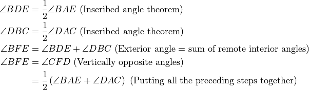
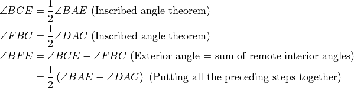
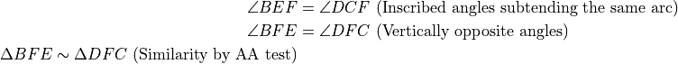
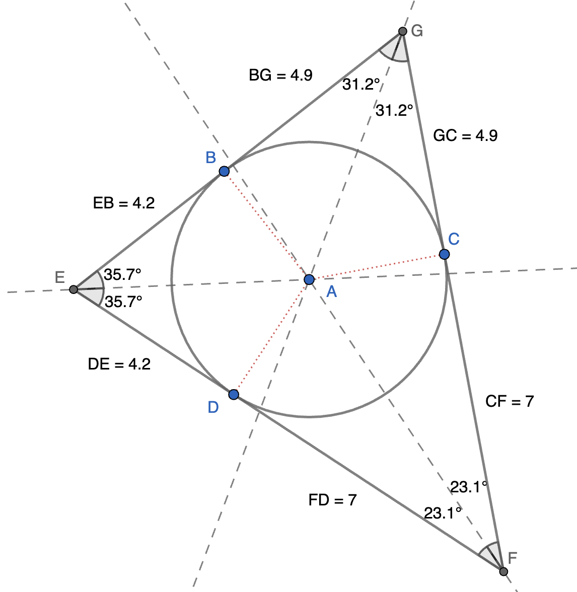
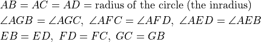
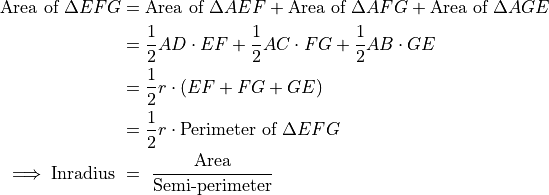
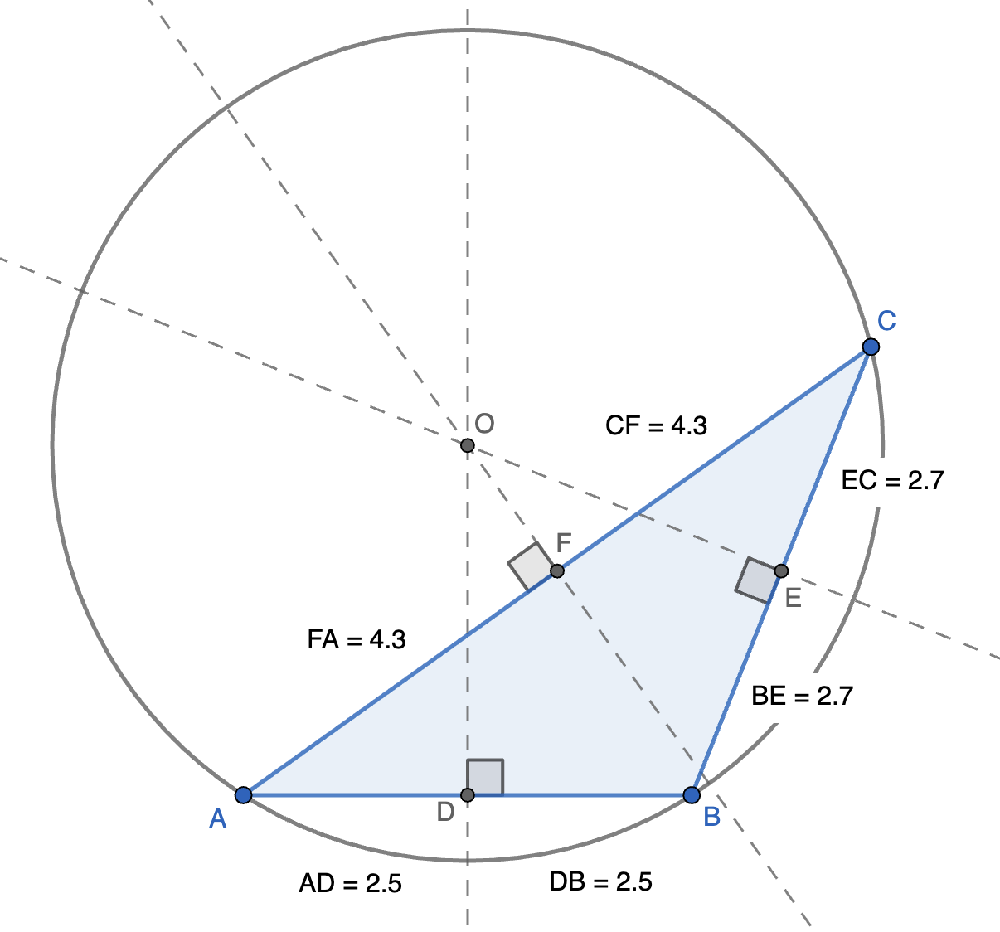
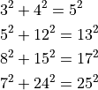

Circles¶
Inscribed Angle¶

A part of the circumference of the circle is called an “arc”. In the above figure, BGC is an arc. The arc is measured by the angle it subtends at the center of the circle. So arc BGC has measure (the measure of angle BAC).
Angles inscribed in the circle are angles whose vertex is on the circle and the arms of the angle are chords of the circle. Angles BDC and BEC (purple angles) are inscribed angles that are subtended the same arc BGC. The measure of these angles is half the measure of the arc. All inscribed angles that are substended bu arc BGC are equal and have measure equal to half of the arc measure. This is the inscribed-angle theorem.
The measure of arc BDC is . Angles BGC anf BHC are inscribed angles subtended by arc BDC (blue angles). Their measure is half of the measure of arc BDC i.e. .
Note that is formed by the chord that connects the ends of the arc BGC and the tangent at point C. The measure of this angle is also half the arc measure. Similarly is half the measure of arc BDC.

A diameter can be thought of as the angle subtended by the semicircle at the center of the circle. This subtended angle is  . Hence, any inscribed angle subtended by the semicircle of the diameter is equal to . Hence, . As discussed in the preceding example, is also a right angle. Thus, a tangent is perpendicular to the segment joining the center of the circle (A) to the point of tangency (C).
. Hence, any inscribed angle subtended by the semicircle of the diameter is equal to . Hence, . As discussed in the preceding example, is also a right angle. Thus, a tangent is perpendicular to the segment joining the center of the circle (A) to the point of tangency (C).
In problems involving tangents, this segment from the center to the point of tangency is a common useful auxilliary segment.
Chords¶

EF is a chord of the circle. A perpendicular dropped from the center of the circle to the chord (AG) bisects the chord EF forming two congruent triangles AEG and AFG (SSS or hypotenuse-leg test).
Additionally, all chords of the same length are equidistant from the center.
The largest chord is the diameter which has distance 0 from the center. As the distance of the chord from the center increases, the length of the chord keeps decreasing. When the distance of the chord from the center approaches the radius, the length of the chord approaches 0.

BC and DE are two chords that intersect inside the circle. The measure of angles BFE and CFD are half of the sum of the measures of the two arcs BE and CD (the arcs that are subtended at these angles). Here is a short proof:


Here, chords BD and EC intersect at point F outside the circle when extended. The measure of angle BFE in this case is half of the difference of the measures of the two arcs BE and DC (the subtended arcs). Now for the proof:


If BC and DE are two chords that intersect inside the circle at point F, then . This is the chord-intersection theorem.
This follows from the similarity of triangles FBE and FDC.

Tangents and Secants¶

We have already seen that a tangent is perpendicular to the segement joining the center of the circle to the point of tangency. As seen in the above figure, two tangents can be drawn from an external point to the circle. Both the tangents are equal. This follows from the congruency of triangles ABC and ADC due to the hypotenuse-leg test (One leg in the radius in both triangles and the hypotenuse is a common side).
In most problems involving tangency of a line/segment or tagnency of two circles, joining the point of tangency to the center is a useful construction. Also, wehen two tangents from a common point is involved, constructing the hypotenuse is also sometimes useful.

In the above figure DB is part of a tangent and DL anf DH are parts of secants (Lines that intersect the circle in two points). If the tangent and secants pass through a common point (D in the above figure), the following relation holds:
This is the tangent-secant theorem.
The proof (which we skip here) is based on and .
Incircle¶
{kind=link}

The incircle is the circle which is inside the triangle and has the three sides of the triangle as tangents. Thus, we have two tangents from each vertex. Fron the discussion in the preceding section, the line that passes through the center of this circle (called the incenter) and the vertex will be the angle bisector of the angle at the vertex (from the congruence of the two symmetric triangles). Thus, the incenter is the point of intersection of the angle bisectors of the three interior angles of the triangle. A is the center of the circle anf point B, C, and D are points of tangency.
We end up with the following relations:

We also have the right-angles and the associated Pythagoras theorem relations in the six triangles - AGB, AGC, AFC, AFD, AED, and AEB.
Let  be the inradius. We also have
be the inradius. We also have

Semi-perimeter is half of the perimeter.
Circumcircle¶
{kind=link}

There is a unique circle that can be drawn through three non-collinear points. If the three points are vertices of the triangle, the circle is called the circumcircle. Each side of the triangle is a chord of the circle. The perpendicular bisector of a chord passes through the center of the circle. Hence, the center of the circumcircle - the circumcenter - is the intersection of the perpendicular bisectors of the three sides.
We have seen that a diameter subtends a right angle at any point on the circle. Likewise, the circumcircle of any right-angled triangle has the hypotenuse as a diameter. The circumcenter is at the center of the hypotenuse.
In problems involving chords and tangents that generate right-angled triangles, it is always useful to check if the triangle is a 30-60-90 or a 45-45-90 triangle, or if Pythagorean triplets are involved.
Pythagorean Triplets¶
The common Pythagorean triplets are listed below. The triplets could also be scaled proportionately (as in the case of similar right triangles).
